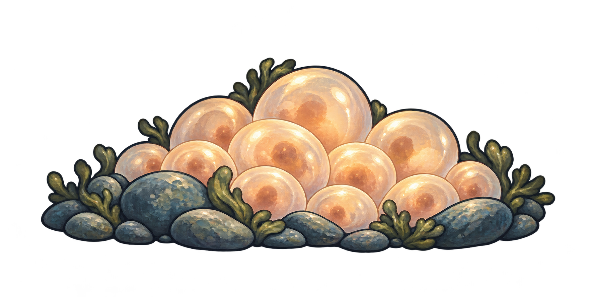
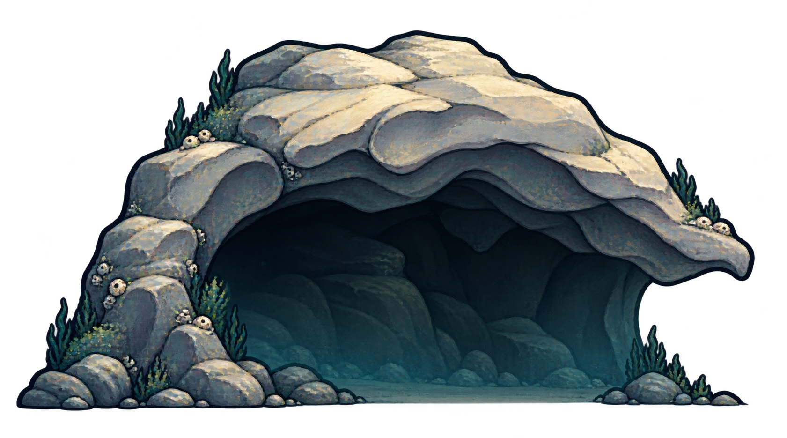
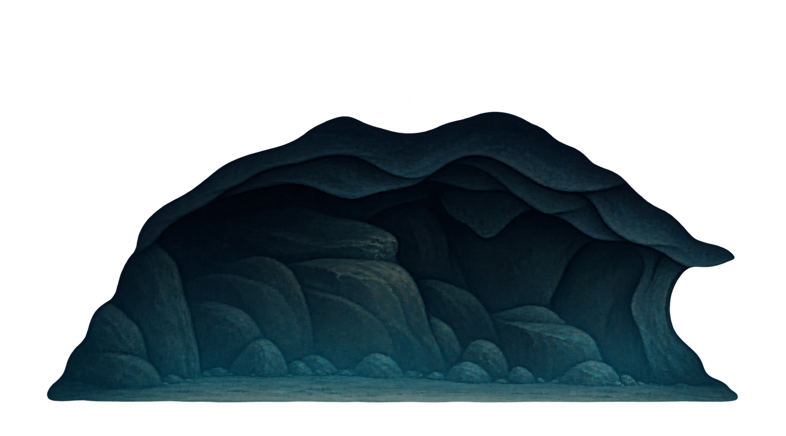
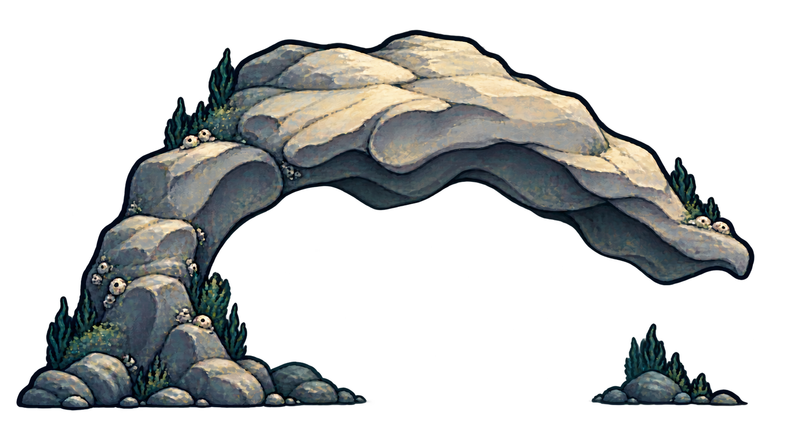
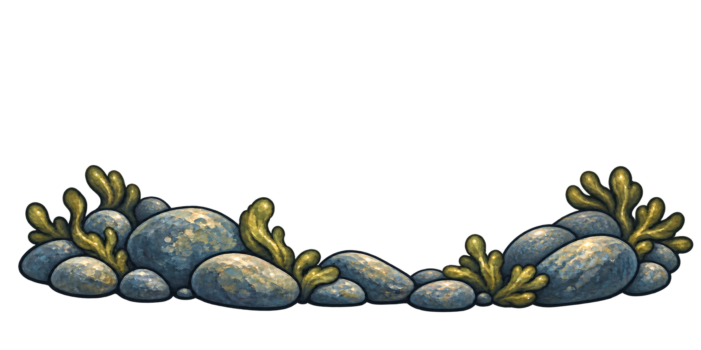
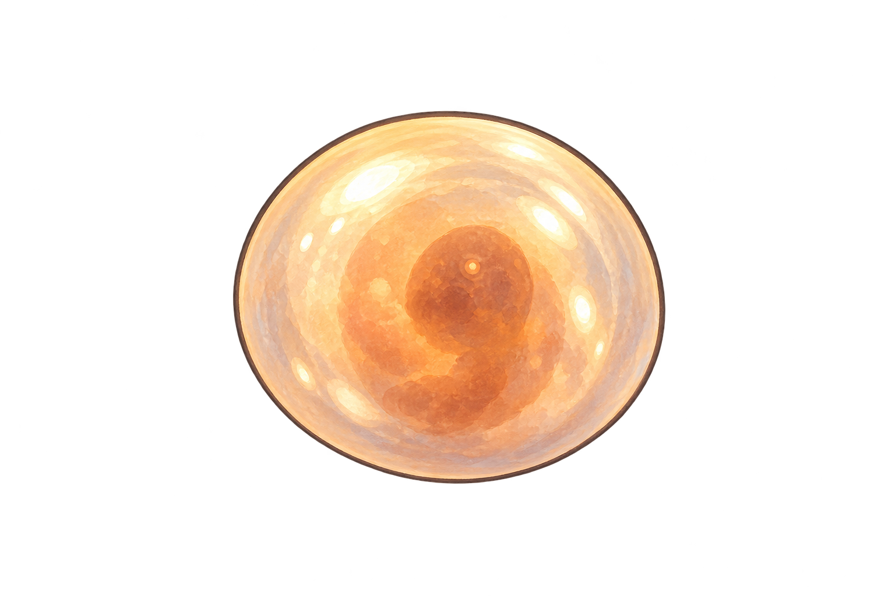
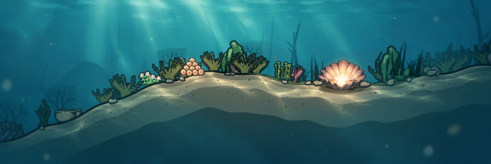

Gemalte Requisiten im Stil der Muschel. Türkis dient als Kontrasthintergrund zum Prüfen der Transparenz. Die Wasserbearbeitung darunter ist eine Stilreferenz.

Ein statisches Bild. Für wechselnde Eierzahl sind Nest und Ei auch separat enthalten.

Fertige Illustration mit dunklem Innenraum.


Im Spiel wird der Fisch zwischen Rückwand und Felsrahmen gezeichnet. Beide Bildleinwände sind hier im gleichen Rahmen skaliert. Die Rückwand lässt sich zum Prüfen der Öffnung ausblenden.

Grundlage für separat platzierte Eier.

Für Zustand, Schlüpfen und Verlust. In Spielgröße deutlich kleiner verwenden.

Lichtmuster auf Oberflächen, weichere Entfernung, Lichtschächte und wenige Schwebeteilchen. Keine eingebaute Shader-Demo. Die neuen Requisiten liegen als separate Assets vor.